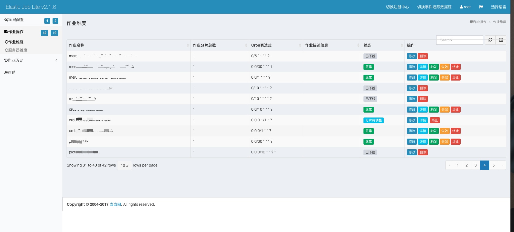

qq交流群:812321371
Elastic-Job是一个分布式调度解决方案，由两个相互独立的子项目Elastic-Job-Lite和Elastic-Job-Cloud组成。Elastic-Job-Lite定位为轻量级无中心化解决方案，使用jar包的形式提供分布式任务的协调服务。
基于quartz定时任务框架为基础的，因此具备quartz的大部分功能
使用zookeeper做协调，调度中心，更加轻量级
支持任务的分片
支持弹性扩容,可以水平扩展, 当任务再次运行时，会检查当前的服务器数量，重新分片，分片结束之后才会继续执行任务
失效转移，容错处理，当一台调度服务器宕机或者跟zookeeper断开连接之后，会立即停止作业，然后再去寻找其他空闲的调度服务器，来运行剩余的任务
提供运维界面，可以管理作业和注册中心。
由于项目为微服务，单模块可能在两个实例以上的数量，定时器就会出现多实例同时执行的情况。
一般定时器缺少管理界面，无法监控定时器是否执行成功。
市面上常见的解决方案为定时器加锁的操作，或者采用第3方分布式定时器。
分布式定时器有多种方案，比如阿里内部的ScheduledX，当当网的Elastic job，个人开源的xxl-job等。
分片：任务的分布式执行，需要将一个任务拆分为多个独立的任务项，然后由分布式的服务器分别执行某一个或几个分片项。
例如：有一个遍历数据库某张表的作业，现有2台服务器。为了快速的执行作业，那么每台服务器应执行作业的50%。 为满足此需求，可将作业分成2片，每台服务器执行1片。作业遍历数据的逻辑应为：服务器A遍历ID以奇数结尾的数据；服务器B遍历ID以偶数结尾的数据。 如果分成10片，则作业遍历数据的逻辑应为：每片分到的分片项应为ID%10，而服务器A被分配到分片项0,1,2,3,4；服务器B被分配到分片项5,6,7,8,9，直接的结果就是服务器A遍历ID以0-4结尾的数据；服务器B遍历ID以5-9结尾的数据。
历史轨迹：Elastic-Job提供了事件追踪功能，可通过事件订阅的方式处理调度过程的重要事件，用于查询、统计和监控。
elasticjob由于当当网Elastic job处于1年间未更新阶段，相关jar处于可以使用阶段功能不全。考虑到使用场景为多项目使用，将elastic-job-lite-spring简单封装便于使用。
ps:实际version版本请使用最新版
<dependency>
<groupId>com.purgeteam</groupId>
<artifactId>elasticjob-spring-boot-starter</artifactId>
<version>0.1.1.RELEASE</version>
</dependency>ps: 需要mysql,zookeeper支持，请提前搭建好。
配置bootstrap.yml或者application.yml。
加入以下配置：
spring:
elasticjob:
datasource: # job需要的记录数据源
url: jdbc:mysql://127.0.0.1:3306/batch_log?useUnicode=true&characterEncoding=utf-8&verifyServerCertificate=false&useSSL=false&requireSSL=false
driver-class-name: com.mysql.cj.jdbc.Driver
username: root
password: Rtqw123OpnmER
regCenter: # 注册中心
serverList: 127.0.0.1:2181
namespace: elasticJobDemo创建定时器类（唯一不同的地方在于将@Scheduled改为实现SimpleJob接口即可）
定时器实现方法编写在execute方法里。
@Slf4j
@Component
public class MySimpleJob implements SimpleJob {
// @Scheduled(cron = "0 0/1 * * * ?")
@Override
public void execute(ShardingContext shardingContext) {
log.info(String.format("Thread ID: %s, 作业分片总数: %s, " +
"当前分片项: %s.当前参数: %s," +
"作业名称: %s.作业自定义参数: %s",
Thread.currentThread().getId(),
shardingContext.getShardingTotalCount(),
shardingContext.getShardingItem(),
shardingContext.getShardingParameter(),
shardingContext.getJobName(),
shardingContext.getJobParameter()
));
// 分片大致如下：根据配置的分片参数执行相应的逻辑
switch (context.getShardingItem()) {
case 0:
// do something by sharding item 0
break;
case 1:
// do something by sharding item 1
break;
case 2:
// do something by sharding item 2
break;
// case n: ...
}
}
}log：Thread ID: 66, 作业分片总数: 1, 当前分片项: 0.当前参数: Beijing,作业名称: PropertiesSimpleJob.作业自定义参数: test将ZookeeperRegistryCenter和JobEventConfiguration注入。
创建JobScheduler @Bean(initMethod = "init")。
在mySimpleJobScheduler方法里先通过ElasticJobUtils#getLiteJobConfiguration获取LiteJobConfiguration对象。
创建SpringJobScheduler对象返回即可。
@Configuration
public class MyJobConfig {
// job 名称
private static final String JOB_NAME = "MySimpleJob";
// 定时器cron参数
private static final String CRON = "0 0/1 * * * ?";
// 定时器分片
private static final int SHARDING_TOTAL_COUNT = 1;
// 分片参数
private static final String SHARDING_ITEM_PARAMETERS = "0=Beijing,1=Shanghai,2=Guangzhou";
// 自定义参数
private static final String JOB_PARAMETERS = "parameter";
@Resource
private ZookeeperRegistryCenter regCenter;
@Resource
private JobEventConfiguration jobEventConfiguration;
@Bean(initMethod = "init")
public JobScheduler mySimpleJobScheduler(final MySimpleJob mySimpleJob) {
LiteJobConfiguration liteJobConfiguration = ElasticJobUtils
.getLiteJobConfiguration(mySimpleJob.getClass(), JOB_NAME, CRON,
SHARDING_TOTAL_COUNT, SHARDING_ITEM_PARAMETERS, JOB_PARAMETERS);
// 参数：1.定时器实例，2.注册中心类，3.LiteJobConfiguration，
// 3.历史轨迹（不需要可以省略）
return new SpringJobScheduler(mySimpleJob, regCenter, liteJobConfiguration, jobEventConfiguration);
}
}ElasticJobUtils#getLiteJobConfiguration参数简介：
/**
* 获取 {@link LiteJobConfiguration} 对象
*
* @param jobClass 定时器实现类
* @param jobName 定时器名称
* @param cron 定时参数
* @param shardingTotalCount 作业分片总数
* @param shardingItemParameters 当前参数 可以为null
* @param jobParameters 作业自定义参数 可以为null
* @return {@link LiteJobConfiguration}
*/
public static LiteJobConfiguration getLiteJobConfiguration(
final Class<? extends SimpleJob> jobClass,
final String jobName,
final String cron,
final int shardingTotalCount,
final String shardingItemParameters,
final String jobParameters) {
...
return ...;
}当然也可以用下面的@Configuration实现简化,配置bootstrap.yml或者application.yml。
spring:
elasticjob:
scheduled:
jobConfigMap: // 为map集合
PropertiesSimpleJob: // 定时器key名称
jobName: PropertiesSimpleJob // job名称
cron: 0 0/1 * * * ? // cron表达式
shardingTotalCount: 2 // 分片数量
shardingItemParameters: 0=123,1=332 // 分片参数
jobParameters: test // 自定义参数注入SpringJobSchedulerFactory，在propertiesSimpleJobScheduler方法里调用gerSpringJobScheduler方法即可。
@Configuration
public class PropertiesSimpleJobConfig {
@Resource
private SpringJobSchedulerFactory springJobSchedulerFactory;
@Bean(initMethod = "init")
public JobScheduler propertiesSimpleJobScheduler(final PropertiesSimpleJob job) {
// 参数：1.定时器实例，2.配置名称，3.是否开启历史轨迹
return springJobSchedulerFactory.getSpringJobScheduler(job,"PropertiesSimpleJob", true);
}
}ps:这个注解包含了上述方式，简化定时器注入。
继承SimpleJob实现方法execute。
在AnnotationSimpleJob类上加入注解@ElasticJobScheduler即可。
下面为完整注解。
@Slf4j
@ElasticJobScheduler(
name = "AnnotationSimpleJob", // 定时器名称
cron = "0/8 * * * * ?", // 定时器表达式
shardingTotalCount = 1, // 作业分片总数 默认为1
shardingItemParameters = "0=Beijing,1=Shanghai,2=Guangzhou", // 分片序列号和参数用等号分隔 不需要参数可以不加
jobParameters = "123", // 作业自定义参数 不需要参数可以不加
isEvent = true // 是否开启数据记录 默认为true
)
public class AnnotationSimpleJob implements SimpleJob {
@Override
public void execute(ShardingContext shardingContext) {
log.info(String.format("Thread ID: %s, 作业分片总数: %s, " +
"当前分片项: %s.当前参数: %s," +
"作业名称: %s.作业自定义参数: %s",
Thread.currentThread().getId(),
shardingContext.getShardingTotalCount(),
shardingContext.getShardingItem(),
shardingContext.getShardingParameter(),
shardingContext.getJobName(),
shardingContext.getJobParameter()
));
}
}分布式job可以解决多个项目同一个定时器都执行的问题，配合elastic-job控制台可以直观监控定时器执行情况等。

示例代码地址:elastic-job-spring-boot